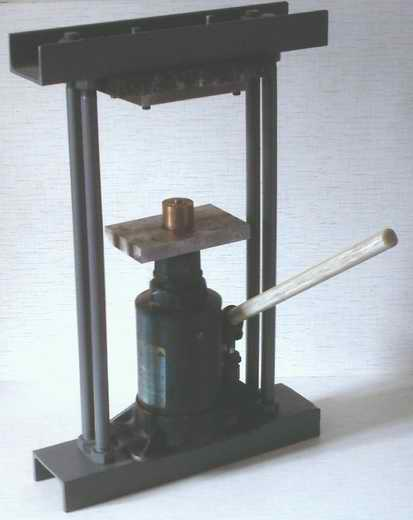

Пресс настольный ручной с гидравлическим домкратом 5 тонн

Пресс [3] позволяет создавать долговременно усилие до 5 тонн и кратковременно до 10 тонн. Предназначен для получения таблеток из мелкодисперсных веществ (порошка или опилок), изготовления постоянных магнитов небольших размеров [1], вырубания отверстий в листовых материалах, прессования деталей из листовых материалов. При прессовании может быть получено давление до 10000 атмосфер (при поперечном сечении до 1 см2). Небольшие размеры пресса (610 х 400 х 130 мм3) и масса (менее 40 кг) позволяют использовать его в помещениях с ограниченной площадью (переносной настольный вариант).
Для пресса использован гидравлический ручной домкрат с максимальным усилием до 10 тонн, установленный в раме. Рама сделана из двух стальных швеллеров, стянутых четырьмя стальными шпильками. На верхнем швеллере и на выдвижном цилиндре домкрата установлены стальные плиты, на которых могут быть смонтированы пресс-формы и другие приспособления для прессования.
На основе опыта эксплуатации пресса сделан более технологичный в изготовлении пресс с максимальным усилием 10 тонн [2].
Ссылки:
04.08.2003
24.07.2006
28.10.2009
21.06.2010
13.05.2018
Альтернативные источники
энергии
Компьютеры и
Интернет
Магнитные поля
Механотронные системы
Перспективные
разработки
Электроника и технология